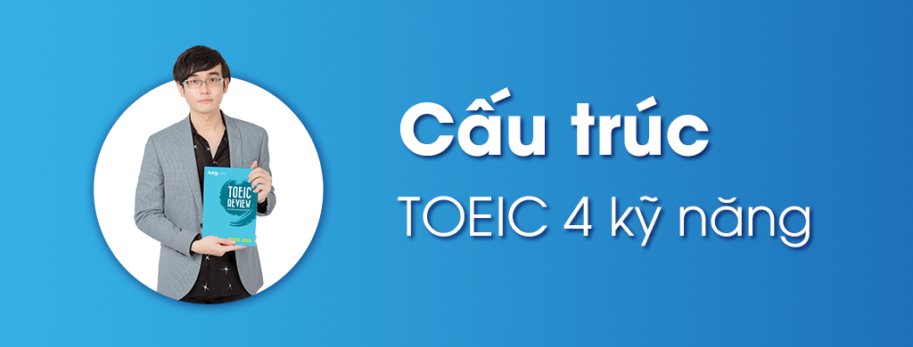

Khóa học Luyện thi TOEIC 4 kỹ năng sẽ trang bị cho bạn những kiến thức và kỹ năng cần thiết để chinh phục kỳ thi TOEIC. Với đội ngũ giáo viên giỏi chuyên TOEIC cùng phương pháp giảng dạy hiệu quả, khóa học sẽ giúp bạn nâng cao toàn diện trình độ tiếng Anh và tự tin chinh phục kỳ thi TOEIC.
Bài thi Toeic 4 kỹ năng gồm 2 phần thi riêng biệt:
- Bài thi TOEIC Listening/ Reading
- Bài thi TOEIC Speaking/ Writing
+ Đối với phần thi Listening và Reading:
Đây chính là bài thi Toeic phổ biến nhất ở Việt Nam hiện nay gồm 2 bài thi Nghe và Đọc với tổng cộng 200 câu trắc nghiệm. Mức điểm cho cả hai phần Listening/ Reading nằm trong khoảng từ 10 đến 990 điểm. Lệ phí cho bài thi này là 30 USD.
+ Đối với phần thi Speaking và Writing:
Đây là bài thi Toeic mà các bạn có thể đăng ký thi nếu Trường hoặc công ty của các bạn yêu cầu. Tổng điểm của bài thi Speaking/ Writing là 400 điểm. Lệ phí của bài thi Toeic Speaking và Writing là 80 USD.
Dành cho các bạn sinh viên cuả các trường đại học yêu cầu chuẩn đầu ra tiếng Anh là bài thi TOEIC 4 kỹ năng.
- Dành cho các nhân viên, công chức cán bộ muốn nâng cao năng lực tiếng Anh thực tế.
- Dành cho các bạn trẻ muốn ứng tuyển vào các doanh nghiệp lớn.
- Dành cho những bạn cần chứng chỉ để đáp ứng điều kiện đầu vào cao học.
- Dành cho những bạn muốn cải thiện tiếng Anh toàn diện (Nghe-Nói-Đọc-Viết).
- Dành cho các bạn quản lý cấp trung, cấp cao muốn cải thiện kỹ năng viết Email, đàm phán công sở.
- Dành cho các bạn muốn cải thiện khả năng giao tiếp, đàm phán với đối tác nước ngoài.
Tại sao lại lựa chọn thi TOEIC 4 kỹ năng? Hãy tham khảo những ưu và nhược điểm của kỹ thi TOEIC 4 kỹ năng dưới đây:
+ Ưu điểm:
- Một số nhà tuyển dụng ưu tiên lựa chọn người xin việc có TOEIC 4 kỹ năng hơn so với TOEIC 2 kỹ năng.
- Bài thi TOEIC 4 Kỹ Năng đánh giá được toàn diện 4 kỹ năng cơ bản trong tiếng Anh là Nghe, Nói, Đọc, Viết.
- Bài thi có tính ứng dụng cao khi cung cấp cho các thí sinh các kỹ năng cần thiết trong công việc như khả năng viết Email, thuyết trình và xử lý vấn đề bằng tiếng Anh.
+ Nhược điểm:
- Lệ phí thi TOEIC 4 kỹ năng khá cao so với TOEIC 2 kỹ năng.
- Tính phổ biến của TOEIC 4 kỹ năng chưa cao tại Việt Nam.
+ Khóa học Toeic 4 kỹ năng online tại SEPEnglish bao gồm những gì?
Khóa học bao gồm 4 kỹ năng: Nghe, Đọc, Nói, Viết, được giảng dạy bởi giáo viên chuyên nghiệp và có kinh nghiệm.
+ Cách đăng ký khóa học Toeic 4 kỹ năng online tại SEPEnglish?
Liên hệ trực tiếp với nhân viên tư vấn để được hướng dẫn đăng ký tại đây.
+ Thời lượng và thời gian học của khóa học Toeic 4 kỹ năng online tại SEPEnglish là bao lâu?
Khóa học có thời lượng và thời gian linh hoạt, tùy thuộc vào lựa chọn của học viên. Thông thường, khóa học kéo dài từ 1 đến 3 tháng.
+ Tại sao nên luyện thi TOEIC 4 kỹ năng cấp tốc tại SEPEnglish?
- Cam kết đầu ra cho từng học viên.
- Các giảng viên với chuyên môn trong từng bài thi và kinh nghiệm giảng dạy lâu năm.
- Giáo trình tinh gọn tập trung vào thực hành giúp học viên rút ngắn quá trình học tập
- Hệ thống thi thử Online – Offline mỗi tháng giúp học viên đánh giá chính xác trình độ bản thân
- Hệ thống Website hỗ trợ học viên 24/24, giúp học viên cải thiện trình độ mọi lúc mọi nơi.
- Đội ngũ tư vấn viên hỗ trợ các bạn học viên trong suốt khoá học.